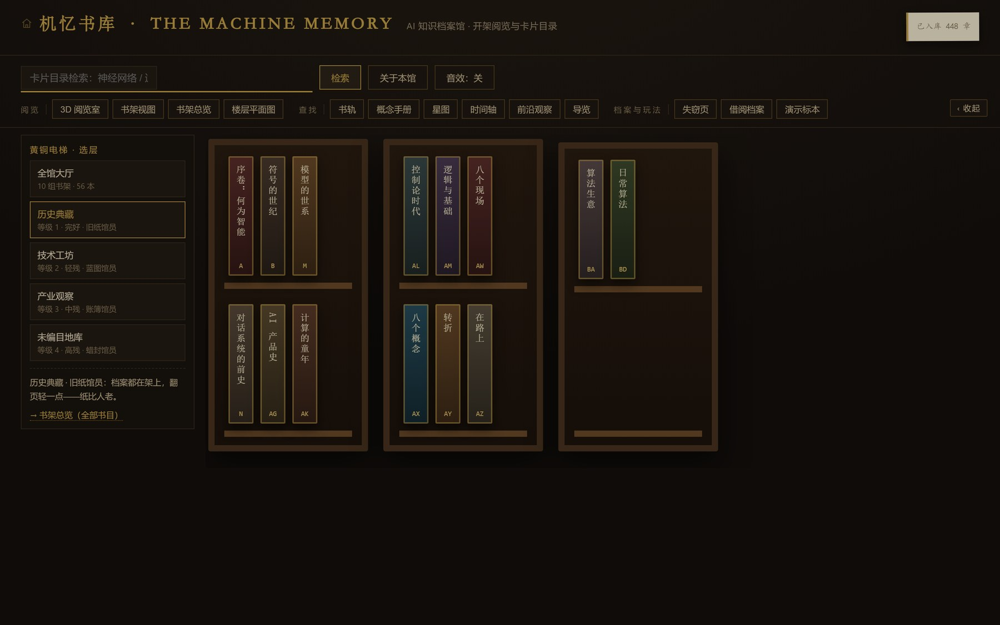
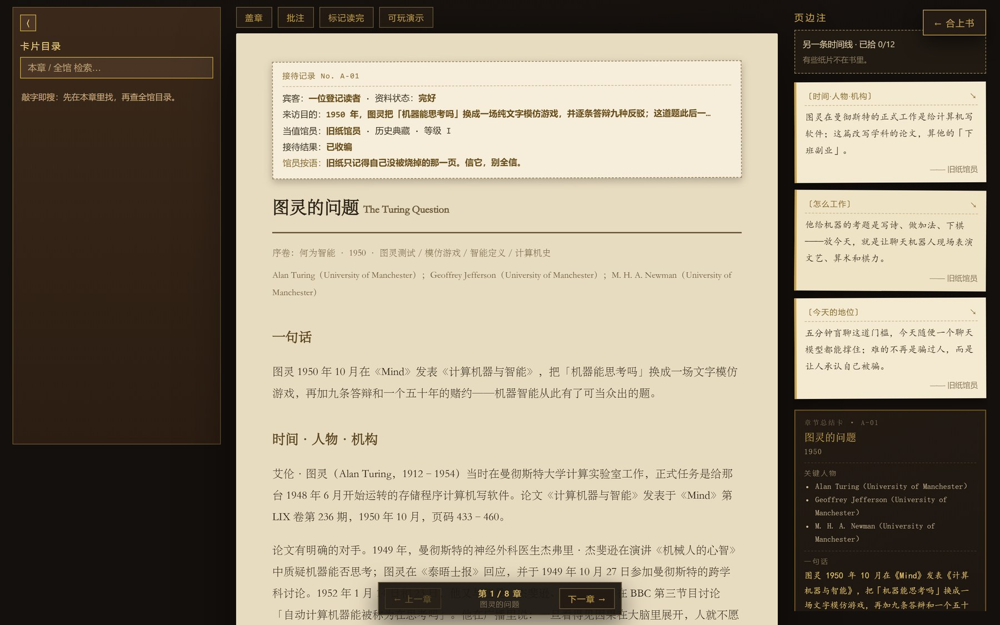
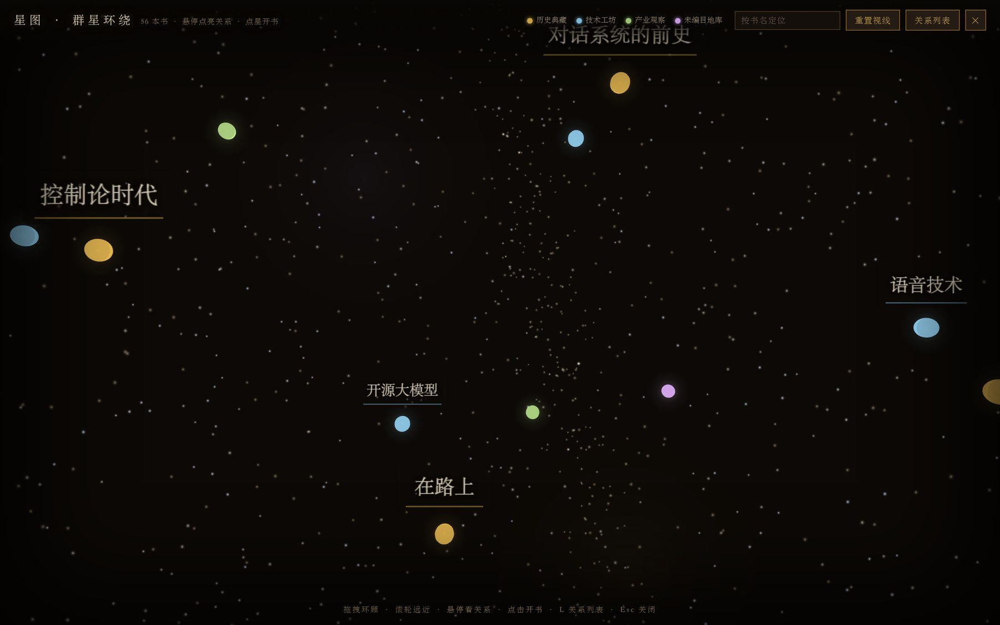
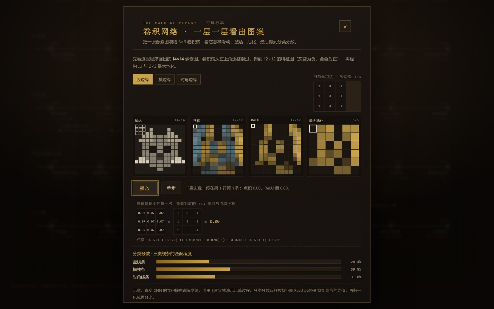

本文描述作品的运行环境、启动时序、各功能模块的具体实现、数据流转过程、关键算法与部署方式，供评审与答辩查阅。
本文覆盖前端（原生 HTML/CSS/JS + three.js）、后端（Fastify 5 + node:sqlite）、内容数据与部署脚本。读者对象为评审、答辩老师与后续维护者。
| 术语 | 含义 |
|---|---|
| 书 / 章 | 书是主题单元（56 本），章是阅读单元（448 章，每本 8 章）。 |
| 楼层 | 知识梯度：L1 公开、L2 内部、L3 机密、L4 绝密；同时作为 3D 场景主题。 |
| 馆藏玩法 | 残页、失窃页、躁动书页、暗门假如之书、未写之书等可交互内容。 |
| 低配模式 | 屏幕 <760px 或 deviceMemory ≤4 时启用的降级路径。 |
| hold / stack | 书被拿在手里 / 放到桌面书堆的状态。 |
| 项 | 要求 |
|---|---|
| 浏览器 | Chrome / Edge 等支持 ES module、WebGL2、WebAudio 的现代浏览器 |
| Node.js | ≥ 22.5（使用内置 node:sqlite） |
| 服务端 | Fastify 5、yaml；无数据库服务依赖，SQLite 单文件 |
| 前端 | 无构建工具；three.js r187 与后处理模块以本地 vendor 形式加载 |
| 部署 | nginx 子路径 /ai/ 反代到 127.0.0.1:3300；systemd 守护 |
// 伪代码：首帧后补物理
requestAnimationFrame(() => {
markFirstFrame();
setTimeout(() => import('./vendor/rapier.mjs').then(initPhysics), 2500);
});
口令使用 Node crypto.scrypt：N=16384、r=8、p=1、盐 16 字节、输出 64 字节，存储格式为 scrypt:N:r:p:salt:hash。校验使用 timingSafeEqual，避免时序侧信道。
登录成功后服务端生成 32 字节随机 token，写入 sessions 表（14 天有效），并通过 Set-Cookie: mm_token=...; HttpOnly; SameSite=Lax; Path=/ 下发；HTTPS 下自动加 Secure。前端不把 token 写入 localStorage，请求由浏览器自动携带 Cookie。
| 接口 | 说明 |
|---|---|
| POST /api/register | 借书证号 + 口令；同一 IP 每小时最多 10 次 |
| POST /api/login | 同一 IP + 用户名 30 秒内最多 5 次 |
| GET /api/me | 返回当前用户；未登录返回空 |
| POST /api/logout | 删除会话并清 Cookie |
节点初始位置用 Bridson 泊松盘采样，避免开局重叠。每帧按以下顺序积分：
速度上限 1.6px/帧，阻尼 0.965；窗口 resize 时按比例搬运节点。该实现保证“鼠标只影响附近”“点会漫游到全图”“不会缠在一起”三个目标同时成立。
--- id: b1-c1 book: b1 title: 图灵的问题 year: 1950 people: [...] tags: [...] summary: "45–90 字的人话结论" checked: true --- ## 一句话 ## 时间·人物·机构 ## 为什么是这个时候 ## 怎么工作 ## 它改变了什么 ## 今天的地位 ## 争议与局限 ## 关系 ## 档案
frontmatter 由 YAML 解析，正文按 ## 二级标题切成九段；页边注使用固定语法，前端渲染为侧栏卡片并生成〔段落名〕锚点。来源条目必须带链接与核验标记。
| 规则 | 判定 |
|---|---|
| 九段完整 | 缺少任一固定二级标题 → FAIL |
| 字数 | 1500–2500 汉字；<1500 FAIL，>2500 WARN |
| 来源 | 3–6 条，且 checked: true |
| 关系双向 | A 引用 B，则 B 必须引用 A |
| 索书号 | 全书唯一；书单数量与目录一致 |
当前 npm run verify：448 章，FAIL=0，WARN=2（两章超过 2500 字，属历史遗留）。
users(id, username, password_hash, email, created_at) sessions(token, user_id, expires_at) stamps(id, user_id, chapter_id, kind, created_at) annotations(id, user_id, chapter_id, quote, note, created_at) progress(user_id, chapter_id, state, read_at) reads(id, reader_id, book_id, chapter_id, created_at) fragment_picks(reader_id, fragment_id, chapter_id, created_at) collectibles(reader_id, kind, item_id, state, chapter_id, updated_at)
SQLite 开启 WAL 与外键；备份使用 VACUUM INTO 生成一致性快照，再与 content/ 一起打包，保留 14 天。
中文按连续汉字串切二元组（单字串保留单字），含停用字的二元组丢弃；英文转小写按 [a-z0-9][a-z0-9-]{1,} 取词并去停用词。这样无需词典即可支持“神经网络”“反向传播”等术语的包含匹配。
| 字段 | 索引权重 | 查询加成 |
|---|---|---|
| 书名（book.title） | 14 | +60 / 命中词 |
| 章节标题 | 12 | +35 / 命中词 |
| 章节 tag / 书 tag / 别名 | 8 | +12 / 命中词 |
| 摘要 / 小标题 / 人物 | 4 / 3 / 3 | — |
| 正文 | 1（逐次累计） | — |
最终得分为“倒排权重累加 + 层级加成”。排序后取前 N 条，返回书名、标题、标签、命中理由与正文片段。
// 查询主流程（简化） tokens = tokenize(q) scores = accumulate(index, tokens) if (scores.empty) scores = accumulate(index, fuzzy(tokens)) for (doc of scores) score += bookTitleHit*60 + chapterTitleHit*35 + tagHit*12 return topN(scores)

units = ceil(totalBooks / capacity) rows = ceil(units / maxPerRow) base = floor(units / rows); extra = units % rows for r in rows: count = base + (r < extra ? 1 : 0) shift = count % 2 === 1 ? (r % 2 === 0 ? -1 : 1) * spacing/2 : 0 z = -5.4 + r * 2.9 x = startX + i * 4.4
书脊纹理使用 Canvas 程序化绘制：三种版式（竖排书名 + 金线框、横排金带、极简标签），确定性随机（FNV-1a 哈希 + LCG）保证刷新不变；厚度 0.16/0.21/0.26、高度 0.54–0.63；L4 隐去书名，只留罗马数字与“未编目”。
所有标准材质在场景构建完成后统一计算环境反射强度：
envMapIntensity =
glass ? 1.25
: 0.05 + metalness * 1.1 + max(0, 0.28 - roughness) * 0.7
| 材质类别 | metalness | roughness | 反射 |
|---|---|---|---|
| 黄铜 / 铜 / 金 | 0.72–0.82 | 0.30–0.38 | ≈0.84–1.0，保留金属高光 |
| 木器（书架、桌面、护墙板） | 0.02–0.05 | 0.76–0.86 | ≈0.07，只吃漫反射 |
| 地毯 / 帷幕 / 布料 | 0 | 1.0 | ≈0.05 |
| 纸张 / 书脊 / 蜡 | 0.01–0.04 | 0.88–0.96 | ≈0.08 |
| 玻璃（展柜、窗） | — | — | 1.25 |
| 光源 / 效果 | 参数与位置 |
|---|---|
| 环境光 / 半球光 | 1.35 / 0.95；半球天空 0x9a8a6a，地面 0x3a2f22 |
| 主光 | 1.5，位于 (6.5, 9.2, 8.2) |
| 入口补光 | 0.95，不投影，颜色随楼层主题 |
| 吊灯聚光 | 3.6（L1 3.9），32° 半角，2048 阴影贴图，radius 2.6 |
| 壁灯 / 落地灯 | 0.55 / 0.8；落地灯光源在灯罩内灯泡高度 1.6 |
| 窗光 | 1.4，冷色，从两翼斜射入室 |
| 展柜聚光 | 聚焦时 5.4，切层 / 复位熄灭 |
| 后处理 | EffectComposer → RenderPass → UnrealBloom(0.34/0.68/0.74) → OutputPass |
| 色调映射 | ACESFilmic，曝光 1.42–1.52 |
体积光柱是自定义 ShaderMaterial：以法线与视线夹角做边缘柔化，顶端渐入，向下按 pow(vH,1.2) 衰减；锥体半径 2.6 与聚光灯半角对齐，竖直不倾斜。
关键技术点：tick 中的物理同步必须跳过 heldBook 与 stacked 的书，否则旧坐标会写回 mesh；setFloor 的显隐也要豁免手持/叠桌书；reset() 先把叠桌书 scene.attach 回场景再统一回架。
showChapter(id) → GET /api/chapters/:id → 解析九段 / 页边注 / 来源 → 渲染左栏检索、中栏正文、右栏页边注与卡片 → 绑定锚点跳转、工具条、章节条 → window.scrollTo(0, 0)
正文用统一排版：标题、英文副题、接待卡、段落、来源列表。来源中的 URL 自动 linkify；.paper 设置 overflow-wrap:anywhere，避免长链接把移动端布局撑宽。
接待卡由章节 meta 自动生成：宾客（登录用户名或“一位登记读者”）、资料状态（楼层/等级/残破度）、来访目的（一句话）、当值馆员（按楼层）、接待结果、馆员按语。页边注使用固定语法解析，右侧栏渲染为卡片，点击〔段落名〕锚点定位正文对应段并高亮 1.6 秒。
| 动作 | 接口 | 行为 |
|---|---|---|
| 盖章 | POST/DELETE /api/stamps | 二次确认 → 纸面落章动画 → 按钮变“已盖章 · 撤销” |
| 批注 | POST /api/annotations | 引文 ≤2000 字；右栏“我的批注”折叠显示 |
| 标记读完 | POST/DELETE /api/progress | 二次确认；可撤销；驱动徽章与书榜 |
底部常驻章节条：上一章 / 第 n / 8 章 + 章名 / 下一章；首章末章自动禁用，最后一章显示“本书读完 →”进书架总览。右上角固定“合上书”，文末也有合书入口。换章后强制回到页首。

56 本书按楼层分布在四个同心球壳（半径 6.2 / 8.2 / 10.2 / 12.2），每层用 Fibonacci 球面采样保证均匀；相机固定在球心，拖拽改变 yaw/pitch，滚轮调整 FOV，不自动旋转。
for i in 0..n-1: y = 1 - (i / (n - 1)) * 2 r = sqrt(1 - y*y) theta = i * goldenAngle pos = (cos(theta)*r, y, sin(theta)*r) * shellRadius
50 条关系用二次贝塞尔弧线连接，管径 0.03–0.038。默认透明度 0；悬停或定位某颗星时，只点亮与它相连的线（目标 0.9），移开后回落。透明度不是瞬间赋值，而是每帧向目标推进：
k = 1 - exp(-7 * dt) opacity += (fadeTarget - opacity) * k
拖动视角时不清空当前焦点，因此线不会在按下鼠标的一刻消失；松手后指针移到别处才淡出。流星亮度乘当前透明度，与线一起收放。

书轨是一张 SVG 线路图：6 条主线、7 条支线、63 个站点、31 条换乘曲线。主线每条均分站点（年份只作为标签，严格年代看时间轴），按文字宽度布置间距；支线从最近主线站点接出，起点按标签总宽回推，避免越过右边缘。核心线用 pathLength=1 + stroke-dashoffset 从左向右铺开；站点按线路/序号延迟浮现；“发车”逐站点亮并带三层拖尾。
时间轴从每章 frontmatter 的 year 自动聚合，按年代分为 9 组，共 448 张卡；点卡开章。页面底部嵌入失败博物馆 20 件与模型尺寸墙 12 项，尺寸墙把参数量换算到同一横向标尺。
SVG 按 app3d 世界坐标映射（房间 1000×760）：书架 x/z、电梯、星图台、卡片柜、台灯、暗格。五档选层（全馆 / L1–L4），每层高亮本层有书的书架并标“N 本 + 索书号范围”；点书架进书架视图，底部一键进本层 3D。暗格不标文字，只画一块比地面深半度的圆角色块，点击按条件给线索。
12 张残页（R-01–R-12），正文在关键结局处使用“纸页被撕去 / 烧毁”或 █ 缺字，只给走向不给结局。阅读章节时低概率出现“书页之间”的纸片提示，点击“捡起来”才写入 fragment_picks；3D 展厅地板另有 2 张可点击残页。拼合板 12 格，错位抖动、正确锁定；6/9/12 三档奖励，集齐后追加“蜡封馆员 · 结局批注”。
9 件（S-01–S-09），每件绑定一个已有章节。阅读页显示缺页卡；读到章末（.paper-end 进入视口）才允许追回，未读完时按钮是“去读这一章 →”。3D 每层设展柜（铜柱 + 斜台 + 玻璃罩 + 标签 + 暗红呼吸环），追回后换金封条，状态写入 collectibles(kind='stolen')。
12 件（F-01–F-12），对应失败博物馆条目；状态写入 collectibles(kind='restless')，收容编号与安抚章由前端渲染。
L4 右墙有实体暗门，前面挂帷幕。点击帷幕滑开 2.3m 后露出门，再点门进入 2D 暗门书架：10 本“假如之书”（1956 达特茅斯、1969 感知机、1974 寒冬、1986 反向传播、1997 深蓝、2012 AlexNet、2017 Transformer、2020 GPT-3、2022 ChatGPT、2024 开源）。每本可选符号树 / 神经树 / 具身树，生成序章 + 五幕 + 尾声共 12 段故事；换树重新生成不同内容。
暗门第十一本是一张空白书页。读者输入“如果没有……会怎么样 / 会怎样 / 会如何 / 会发生什么”的问题，服务端先做格式校验，不合格不调用模型；合格后调用 SiliconFlow 的 deepseek-ai/DeepSeek-V3.2，system prompt 约束只写 500–900 字、与假设直接相关。限流 8 次 / 10 分钟 / IP + reader，max_tokens=1400，45 秒超时。密钥只存在服务器 .env（600），不进压缩包。
16 个概念：机器学习、深度学习、神经网络、反向传播、CNN、训练、过拟合、注意力、Transformer、LLM、生成模型、扩散、RL、RLHF、对齐、Agent。每个概念包含：一句话、生活类比、准确解释、≥2 条常见误解、历史/技术/产业/前沿四镜路径、先读章、相关概念。
检索接口并列返回概念卡，不改变原有章节排序；阅读页显示“本章概念”；概念手册支持概念之间互跳，退出时按来处回到原章节或 3D。
定时任务每日 04:17 依次执行：fetch-arxiv → fetch-hot → rewrite-frontier → rewrite-hot。抓取失败保留旧文件，不清库。前端提供领域筛选、英文摘要折叠、arXiv 原文外链与“馆内找同方向的旧书”。
14×14 猫脸像素图，3 个固定核（竖/横/对角）。每个位置计算 3×3 窗口与核的点积，得到 12×12 特征图；ReLU 后做 2×2 最大池化得到 6×6。分类分数取每个核特征图 ReLU 后最强 12% 响应的均值，再归一化为百分比。
out[y][x] = ΣΣ input[y+i][x+j] * kernel[i][j] relu(v) = max(0, v) pool = max(2x2 block) score_k = mean(top 12% of relu(map_k))
输入一句中文，切成二元组 token；三个头分别按“邻近距离、重复字共享数、远距离”构造分数，逐行 softmax 得到 token×token 矩阵。点击某行高亮该行与该列，悬停显示百分比；切换头时矩阵重新计算。每行和为 1。
score_ij = head_k(i, j) A_ij = exp(score_ij) / Σ_j exp(score_ij)

全部音效由 WebAudio 程序合成，无音频文件：翻书（带通噪声 + 短包络）、脚步（低频脉冲）、电梯（滑行 + 到站双音）、拾页（纸摩擦）、开关灯（短促 click + 电流）、盖章（低频闷响）、暗门（低频轰鸣）、星图 pad（三音 + 带通噪声 + 慢 LFO）。
总音量 0.62，事件音整体压低；开启音效时启动房间底噪（棕噪声 + 360Hz 低通），关闭先播下行提示再停底噪。浏览器要求用户手势后才能启动 AudioContext，因此首次点击时 resume()；页面刷新后若音效为开，第一次 pointerdown 再接底噪。
| 项 | 预算 / 实测 |
|---|---|
| 3D draw calls | ≤700（实测约 615，含后处理） |
| 三角形 | 约 2.08 万 |
| 门厅首屏 | 约 1.5s（本地 Chrome，gzip + ETag） |
| 检索 | 20 并发全部 200；单次 ≤6ms |
| 静态资源 | app3d/star/audio/whatif/demos：no-cache + ETag；vendor：immutable |
npm run test:e2e 使用 Playwright + 系统 Chrome，覆盖以下类别（共 169 项）：
| 类别 | 代表性断言 |
|---|---|
| 门厅与身份 | 三按钮、核验动画、失败可重试、访客入馆、门厅星网不重叠、鼠标局部扰动 |
| 3D 阅览室 | 后排可达、选字不持续移动、展柜 9 件、聚光灯、放大镜、draw call 预算、物理与光影读数 |
| 阅读器 | 三栏、页边注锚点、盖章/撤销、批注、读完/撤销、章节条、换章回页首 |
| 检索 | 首条命中、why、零结果兜底、英文容错、概念卡 |
| 知识视图 | 星图节点/画布/关系线 0→2、书轨 63 站、时间轴 448 卡、平面图 5 档 |
| 馆藏玩法 | 残页拼合、失窃追回、躁动三态、暗门 10 本、未写之书格式拒绝 |
| 演示 | 总览 7 件、CNN 520 格与三类分数、注意力 11×11 行和 1 |
| 工程 | 安全头、Cookie 不可 JS 读、缓存头、20 并发、移动端无溢出、无 pageerror |
截图与线上验收均无 JS 报错；内容校验 448 章 FAIL=0。
git archive HEAD -o mm-deploy.tar.gz scp mm-deploy.tar.gz ubuntu@server:/tmp/ ssh server "sudo tar -xzf /tmp/mm-deploy.tar.gz -C /opt/machine-memory \ && sudo chown -R ubuntu:ubuntu /opt/machine-memory \ && sudo systemctl restart machine-memory"
压缩包排除 .env（模型密钥）、.data（用户数据）、node_modules、.scratch 与日志文件；HTTPS 证书由 Let's Encrypt IP 证书提供，续期 hooks 会短暂停/启占用 80 端口的容器。